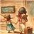

-  【写给我最美好的年华】这么戳人泪点的征文题目啊，这么伤感怀旧的BGM...“放心去飞，勇敢地去追……说好了这一次不掉眼泪”...不光是这个班要毕业了...
阅读全文»
- 不敢相信，查了两遍后，终于确信，我是过了四级了。不容易，考了几次，终于过了。不过，还真的得感谢：谢老师的精采讲课，水母老师和助教平常的督促哦...
阅读全文»
- 终于在最后一天圆满完成了我的BEC初中级课程，作为这个班的班长，我觉得我在这个班级还是收获了很多，知识，朋友...看着147个课件后面的已学习，真的...
阅读全文»
-
 这一次是第一次接触沪江，其实早就知道 但是从来没仔细看过~有一天我去帮同学拿快递，她报了沪江的六级班。当时袋子破掉了，我看到里面是六级的讲义。...
这一次是第一次接触沪江，其实早就知道 但是从来没仔细看过~有一天我去帮同学拿快递，她报了沪江的六级班。当时袋子破掉了，我看到里面是六级的讲义。...
阅读全文»